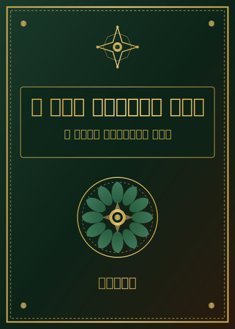

د ځان جوړولو لار
لومړی باب: پیژنه ځان
یو شی دی چې ټول انسانان یې هره ورځ کوي، خو ورته پام نه کوي: هغه ځان ته کتل دي.
زموږ ډیر خلک د ژوند مسافران دي چې د نورو سترګو له مخې ځان وینی. د کلي خلک وایی چې ته داسې یې، نو باید داسې اوسې. مدرسه درته وایی چې ته د فلانکس غوندې شه، بازار درته وایی چې داسې سره وواله، داسې خبرې وکه. خو کله چې شپه راشی، انسان د دواړو سترګو تر منځ یو خالی ځای احساسوي چې نه پوهیږي هغه دی، که نه.
زموږ اجدادو دا خبره ښه پوهیدله. قران کریم وایی: "وفي أنفسكم أفلا تبصرون" یعنې ستاسو خپله وجود کې نښانې دي، ایا نه ګورئ؟ دغه آیت د ځان د پیژندلو لپاره بنسټ ایږدی.
خو د ځان پیژندل یوازې دا نه ده چې ووایو "زه غریب یم" یا "زه قوی یم". ریښتونی ځان پیژندنه یوه داخلی سفر ده، چیرته چې انسان له خپل ځان سره ریښتیا وي.
کله مې یو زوړ خان لیدلی و چې د کونړ غرونو تر لاندې یو کلی کې اوسیده. هغه به تل ویل چې زه پنځوس کاله مخکې هم هماغه سړی وم چې اوس یم. بیا به یې زیاته کوله چې زما جامې تبدیل شوې، زما ویښتان سپین شول، خو زما سوچ هماغسې دی. نور خلک ویل چې دا د ثبات نښه ده. ما بله خبره پکې لیدله: دغه سړی هیڅکله ونه ودریده او خپل ځان ته یې سوال ونه کړ چې آیا زما دغه سوچ سم دی.
نو لومړی قدم دا دی چې ودریږو. ودریږو او پوښتنه وکو: زه اوس چیرته یم؟ د دې ژوند د چومچال له مخه چیرته ورتلم؟ آیا زما عادتونه، زما خبرې، او زما کارونه ما هغه ځای ته بوتلي دي چیرته چې غوښتل مې؟
علماء کرامو د "محاسبه" مفهوم ته خاص اهمیت ورکوي. امام غزالي رحمه الله وایی چې یو هوښیار انسان هر ماښام د خپل ورځ محاسبه کوي: نن ما ورځ آیا ضایع کړه؟ نن مې د خدای د رضا لپاره کومه کوچنۍ کار وکړ؟ نن چاته مې ښه وویل، که بد؟
دا محاسبه هیڅکله د ناکامیو لیست جوړول نه ده. دا یو نرم، مهربانه کتل دي چې ځان ته وکړو. لکه یو ښه دوست چې درته وایی: ملګریه، نن ته داسې وکړل چې ښه نه و. خو سبا بله ورځ ده، سبا بل موقع دی.
د پښتنو کلتور کې د "پت" مفهوم ډیر مهم دی. خو ډیری وختونه موږ د نورو پت ته فکر کوو او د ځان پت هیروو. د ځان پت دا دی چې تاسو له ځان سره بدلون کوئ. هغه عادتونه چې ژوند لنډوي، هغه خبرې چې د نورو زخمونه پرانیزي، هغه ویرې چې له ودې سره مو مخنیوی کوي، دغه ټول د ریښتیني پت سره تضاد لري.
دوهم قدم دا دی چې پوه شو کوم یو عادت اوس مخکې ولاړ دی. یوازې یو. ډیری وختونه خلک وایی: زه غواړم چې غوره انسان شم. دا خورا لوی هدف دی او انسان پوه نه شي چیرته پیل وکي. زما سپارښتنه دا ده: د یوه کوچني عادت له مخه پیل وکه.
که تاسو ووایی چې زه غواړم ډیره پوهه ولرم، نو سبا یوازې لس دقیقې کتاب وولوئ. بس. نه یو ساعت، نه دوه ساعته. لس دقیقې.
انسان اکثراً د پرمختیا لپاره د ستر اراده ور او ستر تبدیلي تمه لري. خو حقیقت دا دی چې ستر تبدیلیانې د کوچنیو مداومو قدمونو له مخه راشی. د رسول الله صلی الله علیه وسلم حدیث دی: "احب الاعمال الی الله ادومها وان قل" یعنې هغه عمل چې الله ته ترټولو خوښ دی، هغه کوچنی عمل دی چې بار بار ادا شی.
دغه حدیث د نوي علم سره موافق دی. ثابته شوي ده چې د انسان دماغ هغه عمل له ځانه سره کوي چې دوه میاشتې لپاره تکراري وي. دغه معجزه ده: شپیته ورځو کې تاسو د ځان د جوړولو یو نوی برخه مالک کیدلی شئ.
وروستۍ خبره چې د دغه باب د پای له پاره وایم: د ځان جوړول د نورو سره مقابله نه ده. کله چې موږ وایو چې زه هلته ورسیږم، موږ ډیری وختونه د چاد پرتله کوو. دا پرتله کول تاسو نه جوړوي، بلکې سوزي.
د ریښتیني پرمختیا معیار دا دی چې تاسو د پخواني ځان پرتله د اوسني ځان وګورئ. آیا تاسو نن یو ملیمه مخکې ولاړئ؟ آیا نن ستاسو زړه یو ذره مهرباني ښودله؟ که هو، نو سبا ته ولاړ شئ.
دا لار اوږده ده. خو هره ورځ چې تاسو پرې ږدئ، هغه ورځ تاسو د پرمختیا سالک یئ.
دوهم باب: د عادت جوړولو هنر
انسان عجیبه مخلوق دی. هغه کارونه چې ورته ویریږي، بیا بیا کوي. هغه خوبونه چې خوښیږي یې، هیڅکله ورته نه ورسیږي. دغه ناخوالۍ له کومه راشي؟ ځواب یو دی: عادت.
کله چې موږ د عادت ویو، دغه کلمه ډیری وختونه د یو بد شی سره تړو. خو عادت پخپله خیر یا شر نه دی. عادت یوازې یوه وسیله ده. هماغه وسیله چې یو سړی ورباندې نیکمرغه کیداستلی شي، بله یا هغه ورباندې بدمرغه هم کولی شي.
نوي علم وایی چې زموږ د ورځني ژوند نږدې نیمایي کارونه عادت دی. موږ پوه نه یو، خو دماغ مو ورپسې ولاړ وي. سهار کيندل، ناشته کول، موبایل لیدل، د کار طریقه، حتی غم او خوشحالۍ ته پاملرنه، دا ټول د عادت پایله ده.
د علماوو د ویناوو له مخه، یو عادت درې برخې لري: لومړی هغه اشاره یا سیګنال چې انسان پرې د کار لپاره هڅوي. دوهم هغه کار پخپله. دریم هغه انعام یا احساس چې له هغه کار وروسته پیدا کیږي. دغه درې برخو ته د "عادت دایره" ویل کیږي.
د مثال لپاره: تاسو سهار بیداریږئ (اشاره)، موبایل مو لاس کې اخلئ (کار)، یو لحظه د چاپیریال له سره خبر کیږئ (انعام). دغه چکر راشی تر دې چې تاسو پوه نه شئ. موبایل چیکول اوس عادت شو.
نو که چیرته موږ د عادت دغه دایره پوهیدلی شو، نو موږ یې بدلولی هم شو.
یو مهم خبر دا دی چې عادت یوه ورځ کې نه جوړیږي. پوهانو یوه لویه څیړنه وکړه چې پکې دوه زره زیات خلک برخه لرله. پایله دا وه چې یو عادت د خودکاره کیدو لپاره اوسط کې شپیتۀ پنځه ورځو ته اړتیا ده. ځینې ساده عادتونه لکه د اوبو د پیالې د خوړلو عادت نږدې شل دیرش ورځو کې جوړیږي. مشکل عادتونه لکه ورزش یا لوستل دوه درې میاشتې غواړي.
دلته یو غلط فکر هم شته. ډیری خلک فکر کوي چې که یوه ورځ یې عادت ماتۀ کړ، نو هرڅه له لاسه ورکوي. دا سم نه دي. علم ثابته کوي چې یوه ورځ پریوتل زیان نه رسوي. مهمه دا ده چې بله ورځ بیا پیل وشي.
پښتنه ویل ده: "یو وار لویدل ننګ نه دی، دوه ځله نه پاریدل ننګ دی." دا خبره د عادت جوړولو لپاره خورا مهمه ده.
اوس راشئ چې د عادت د جوړولو لپاره درې عملي لارې وږغم.
لومړۍ لار دا ده چې خپل چاپیریال بدل کړئ. دماغ د چاپیریال غلام دی. که چیرته تاسو غواړئ هره ورځ کتاب ولولئ، یو کتاب خپل بالښت ته پرېږدئ. که چیرته غواړئ نماز وکړئ، جای نماز هر وخت خلاص کینوئ. چاپیریال بدلول د اراده له بدلولو اسانه دی.
پوهانو ثابته کوي چې هغه خلک چې د خپل چاپیریال بندوبست کوي، د هغو خلکو پرتله چې یوازې اراده کاروي، درې چنده زیات د خپلو هدفونو ته رسیږي.
دوهمه لار دا ده چې یو نوی عادت د یو پخواني عادت سره وتړئ. موږ خوشبختانه ډیر عادتونه لرو. سهار د لمانځه عادت شاید لرئ. د چای د پیالې عادت لرئ. بیا د سفر عادت لرئ. پوهانو دغه لارې ته "عادت ایله کول" وایی. دا دي چې نوی عادت د پخواني وروسته ودرولو. "لمانځه وروسته به لس دقیقې کتاب لولم." "د چای پیالو سره به یو نوی کلمه زده کوم." دغه لار ډیر اغیزمن ده ځکه انسان نوی عادت هیروي خو پخوانی یادیږي.
دریمه لار دا ده چې خپل عادت ثبت کړئ. هر وخت چې یو عادت وکړئ، یو نښه کيږدئ. د کاغذ کوچنۍ جدول کافي دی. د ورځو لړۍ مه ماتوئ. دغه کوچنۍ کار ستاسو دماغ ته د بري احساس ورکوي او هغه احساس بیا تاسو هغه عادت ته بیرته بوزي.
رسول الله صلی الله علیه وسلم فرمایلي: "ان الله یحب اذا عمل احدکم عملا ان یتقنه" یعنې الله خوښوي چې کله انسان یو کار کوي، هغه پوره کوي. دغه "پوره کول" یوازې یوه ورځ نه دی. پوره کول یعنې روزانه، مداوم، پرته له منع.
د دغه باب آخر کې غواړم یو مهم رمز وویم. موږ ډیری وختونه د عادت غوره توب لپاره هغه ورځو ته کتو چې ورته عادت وکړو. خو ریښتیني پراختیا له هغه وخت پیل کیږي چې موږ ځان د "دغه عادت سړي" یا "دغه عادت ښځو" وبولو.
مفهوم دا دی چې که تاسو ووایئ "زه هڅه کوم چې سیګرت پریږدم"، هغه له "زه د سیګرت سکونکی نه یم" سره فرق لري. لومړی قضیه یوه هڅه ده. دوهمه قضیه یوه هویت ده. عادتونه هغه وخت ریښتیني کیږي کله چې ستاسو د هویت برخه وي.
نو دغه باب دا پوښتنه تاسو ته ورپریږدم: کوم سړی یا ښځه یئ چې غواړئ اوسئ؟ هغه انسان کوم عادتونه لري؟ د هغو عادتونو له مخه پیل وکئ، نه د هدفونو له مخه. هدفونه د عادتونو پایله دي، نه لامل.
دریم باب: کله چې زړه نه کیږي
انسان ډیری وختونه د یوه لوی خوب سره پیل کوي. زړه یې بل وي، سترګو کې رڼا وي، او هغه باور چې "زه به دا کوم" ورسره وي. دغه احساس ښه دی. خو دغه احساس اوږده نه وي.
درې ورځو وروسته، یا ورته شپو وروسته، هغه لومړنۍ جوش ورکه کیږي. ویده کیدل اسانه ښکاري. موبایل پرانیستل اسانه دي. هغه کتاب، هغه ورزش، هغه نوی عادت ورو ورو شاته پاتیږي. انسان ورته وایي چې سبا به پیل کوم. سبا هم ورته خبره راشي.
دغه ستونزه نوې نه ده. هر انسان یې پوهیږي، که ملا وي که مزدور، که ځوان وي که زوړ. دغه د هڅو د ورکیدو معمه ده چې ټول یې پوهیږي خو ورباندې کار کم کوي.
اوس پوهانو یوه مهمه کشفیه کوي. هغوي وایي چې هڅه، یانې د کار کولو هغه خوشحاله احساس، د انسان سره تل نه وي. هغه یو لحظوي احساس دی. پوهانو ثابته کوي چې هغه خلک چې د ژوند لوی کارونه سرته رسوي، هغوي ته هم ډیری ورځو هڅه نه وي. هغوي هم ستوني وي، هم ستړي وي، هم شکي وي. خو دوی کار کوي. ولې؟ ځکه دوی ثبات لري. یانې هغه روزانه بندوبست چې اراده یې نه غواړي، بلکې وخت یا ځای یا چاپیریال یې خودکاره پیل کوي.
یو ملګري مې چې کابل کې کار کوي یو ورځ ویل: زه د مالي علم کتابونه یوه موده لوستل، سهار سره. بیا د عید رخصتیو کې پاتې شوم. کله چې بیرته راغلم، دا عجیبه وه چې کتاب پرانیستل ورته ستونزه نه شوه. لاسونه یې پخپله ورته ولاړل. دغه سړي هویت بدل کړی و. کتاب لوستل ورته د اراده کار نه و، بلکې د سهار یوه عادي برخه وه.
اسلام کې د "مجاهده" مفهوم د دغه موضوع سره نږدې اړیکه لري. د ژوند لوی روحاني پرمختیا داسې نه راشي چې یو انسان یو وخت جوش ولري. پرمختیا د روزانه مجاهدې له لارې راشي. قرآن کریم وایي: "والذین جاهدوا فینا لنهدینهم سبلنا" یعنې هغوي چې زموږ د رضا لپاره کوشش کوي، موږ ورته لارې پرانیزو. دلته "جاهدوا" د جاري عمل کلمه ده، یو وخته نه، بلکې مداومه.
یو زوړ عالم مې د کوچنیوالي کیسه کوله چې یوه استاذ ورته ویلي و: د علم منزلونه د قدمونو له لارې ورکوي، نه د لمنو له لارې. دغه خبره د ثبات درس دی. لمن لوی وي، قدم کوچنی وي. خو قدمونه لار وهي، لمنه نه.
نو دلته یوه ستره رشتیا ده: د هڅه انتظار مه کوه. پیل وکه، هڅه به راشي.
پوهانو دا حقیقت اثبات کوي. کله چې انسان د کار پیل کوي، دماغ د خوشحالۍ هورمون ورکوي. هغه هورمون بیا لیوالتیا راوولي. نو اصل دا نه دي چې کله مې زړه وکړ کار کوم، بلکې دا دي چې کله کار وکوم، زړه مې هم کیږي.
دا د پارادوکس غوندې ښکاري. خو حقیقت دی، او هغه خلک یې خوب ته نه بولي چې یې ازمویلی وي.
زموږ د کلتور کې یوه ویل ده: کار ورسته خلک راشي. دا خبره خورا ژوره ده. یانې هغه وخت چې کار پیل شو، نور مرسته کوونکي لاسونه هم راشي، موقعې هم راشي، باور هم راشي.
اوس راشئ چې د ثبات جوړولو لپاره درې عملي سپارښتنې وکوم.
لومړۍ سپارښتنه دا ده چې د کار وخت ثابت کړئ. که تاسو هره ورځ سهار شپاړسو ته کوم کار کوئ، دماغ مو یو اونۍ وروسته پخپله هلته تیارېدل پیل کوي. وخت د اشارې کار کوي. وخت ته احتیاج نه دی چې هڅه راوباسئ.
دوهمه سپارښتنه دا ده چې کوچنی پیل وکئ. که تاسو لس دقیقې پر ورځ کار کوئ، هغه لس دقیقې بس دي. انسان له خپل ځان سره ژمنه اتوماتیکه کوي. کله چې ژمنه وکوي او وکوي، باور جوړیږي. هغه باور بیا لوی کارونه هم لاره کوي.
دریمه سپارښتنه دا ده چې د ماتیدو وروسته چټکه راپاریږئ. یوه ورځ چې له لارې وتلئ، خپل ځان ته وایئ چې سبا به مې بیا پیل کوي. نه سزا، نه اوږده خپه کیدل. یوازې بیا پیل. پښتنه ویل ده: یو وار لویدل ننګ نه دی، دوه ځله نه پاریدل ننګ دی.
رسول الله صلی الله علیه وسلم وایي: "المؤمن القوي خیر وأحب إلی الله من المؤمن الضعیف وفي کل خیر" یانې قوي مومن د کمزوري مومن پرتله د الله ته ښه دی. دا قوت یوازې جسماني نه دی. ذهني ثبات هم پکې شامل دی.
د کوچنیو قدمونو د دوام یوه اوږده زنځیره جوړیږي. تاسو چې اوس یو قدم اوچتوئ، هغه د کلونو وروسته د لویو پایلو لامل کیږي. ریاضیانو دا د مرکب ودې اغیزه بولي. یو سلنه ورو ورو زیاتیدل یو کال وروسته شپیتۀ اته سلنه ودې ته رسیږي.
د ژوند ریښتیني قوت هڅه نه ده. هڅه ورشي او راشي. ریښتیني قوت هغه کوچنی کار دی چې هره ورځ تاسو یې کوئ، که زړه مو کیږي که نه. هغه کار د ځان جوړولو اصلي مواد دی، او هغه مواد هیڅوک له تاسو نه اخیستلی شي که تاسو پخپله یې مه ورکوئ.
څلورم باب: د فکرونو سمبالول
انسانان هره ورځ اوسط کې شپیتۀ زر فکرونه کوي. دغه شمیر د علماوو له مخه ده. دغه معنی دا ده چې موږ د هرې یوې دقیقې لپاره نږدې پنځوس فکرونه کوو. ډیر فکرونه. خو له دغو ټولو فکرونو نه موږ خبر نه یو. ډیر فکرونه خودکاره راشي او خودکاره ځي، لکه باد چې د کور مخ ته تیریږي.
خو یو شی ده چې پوهانو معلوم کړی دی: د هغو شپیتۀ زرو فکرونو نږدې نویه سلنه هماغسې دي لکه پرونۍ فکرونه. او د هغو نویه سلنه فکرونو ډیری برخه منفي ده. دغه د انسان ذهن طبیعي حالت دی، نه ستاسو ستونزه. دماغ د خطر لټون کې وي، ځکه د پخوا انسانانو ژوند خطرونو ډک و. اوس دغه کار ضرورت کم دی، خو دماغ لا هم همداسې ده.
نو پوښتنه دا ده: آیا موږ دغه منفي فکرونو ته غلام یو؟ ځواب نه دی. خو لومړی باید پوه شو چې دغه فکرونه له کومه راشي.
د پخوانیو علماوو کې د "خطرات" مفهوم مشهور دی. امام غزالي رحمه الله وایی چې یو فکر چې د زړه مخ ته راشي، لومړی بی رنګ دی. نه ښه دی نه بد. هغه ته خطره وایي. انسان خپله هغه ته رنګ ورکوي. که هغه ته ډیره پاملرنه وکړه، هغه فکر لوی شي. که یې نادیده وکي، هغه ورکیږي.
دغه خبره د اوسني علم سره بالکل سمه ده. پوهانو ثابته کوي چې هغه فکرونه چې موږ ورته پاملرنه کوو، ذهن کې ژوري شي. هغو فکرونو ته چې موږ یوازې کتو او بیا ورسره نه جنجال کوو، هغه ذهن نه ورکیږي.
یو مثال: تاسو د یوه مهم کار مخه یئ. یو منفي فکر راشي چې "زه به پاتې راشم." دوه لارې شته. لومړۍ لار دا ده چې ووایئ "نه، دا فکر سم نه دی" او ورسره مبارزه وکئ. دوهمه لار دا ده چې ووایئ "یو فکر راغی، دا زه نه یم، دا یوازې یو فکر دی" او بیا خپل کار ته واوړئ. علم ثابته کوي چې دوهمه لار ډیره اغیزناکه ده.
د دغه لارې نوم د علماوو کې "مشاهده" ده. انسان د خپلو فکرونو شاهد وي، نه هغو کې ډوب. صوفیانو دغه حالت ته "حضور" هم وایی. دا یانې دا چې انسان د خپل ذهن مشاهده کوي لکه چې د دریاب غاړه کیني او اوبه وینی، اوبه ورپسې نه ځي.
اسلام کې د "تفکر" عبادت دی. قرآن کریم وایی: "فاذکرونی اذکرکم" یعنې ما یادوئ، زه به هم تاسو یادوم. دا یادونه د ذهن پاکوالي لپاره یوه طریقه ده. کله چې انسان د خدای یاد کوي، ذهن یې له کوچنیو خپګانو نه خلاصیږي او لوی تصویر ویني.
اوس راشئ چې د فکرونو د سمبالولو لپاره درې عملي لارې وباسو.
لومړۍ لار دا ده چې د خپلو فکرونو "کتنه" پیل کړئ. سهار لس دقیقې چپ کینئ. د ذهن د شور سره مه جنجال کوئ. یوازې وینئ چې کوم فکرونه راشي. که د غم فکر راشي، ورته وایئ "غم". که د ویرې فکر راشي، ورته وایئ "ویره". بس. نه ورسره خبرې وکوئ، نه یې تعقیب کوئ. دغه کوچنی تمرین د وخت سره ذهن ته آرامش راوولي.
دوهمه لار دا ده چې خپل منفي فکرونه ولیکئ. کله چې یو منفي فکر راشي، یو کاغذ یا موبایل یادښت کې ورته یو ټکی ولیکئ. بس یو ټکی. دا لیکل عجیبه ده، خو علم وایی چې کله انسان فکر لیکي، هغه فکر له ذهنه راووزي او د کاغذ پر مخ ولاړ شي. بیا انسان له بهر ورته کتلای شي. پوهانو ثابته کوي چې دا طریقه د منفي فکرونو اغیزه نیمه کوي.
دریمه لار دا ده چې پوښتنه وکوئ. هغه ستونزمن فکر ته وایئ: "آیا دا رښتیا ده؟ آیا دغه فکر لپاره دلیل شته؟ که رښتیا ده، نو زه یې سمول کولای شم؟ که نه سمیږي، نو اوس پرې کار کول مې ګټه لري؟" دغه پوښتنې فکر له جذباتي حالت نه د منطقي حالت خواته راوباسي.
حضرت علی رضی الله عنه ویلي دي چې فکر کول د روڼتیا چراغ دی. خو دا فکر د ښو لارو پر مخ وي. که چیرته فکر یوازې د ویرو او پرتلو او بدبینۍ پر لار ولاړ شي، هغه چراغ نه بلیږي بلکې سوزي.
یوه ستره ریښتیا دا ده چې موږ نه شو کولای چې فکرونه بند کوو. خو موږ کولای شو چې وټاکو کوم فکرونو ته به وخت ورکوو. دغه توپیر ستر دی. لکه چې موسیقار د ساز تار غوره کوي. هر تار غږ لري، خو موسیقار غوره کوي کوم ته انگښت ولگوي.
د ځان جوړول د فکرونو جوړولو سره پیل کیږي. عادتونه له فکرونو راشي. چلند له فکرونو راشي. پریکړې له فکرونو راشي. نو که چیرته تاسو غواړئ بهرنی ژوند بدل کوئ، لومړی باید د ذهن باغ پاک کوئ.
پخوانی پښتانه به ویل چې د سینې خبره د مخ ته راشي. یانې انسان هر هغه شی چې دننه لري، بهر راخیستل کیږي. که دننه سکون وي، بهر سکون ښکاري. که دننه آشوب وي، بهر هم آشوب راشي.
دغه باب دا ته ختمیږي: تاسو د خپلو فکرونو خاوند یئ، نه هغو فکرونو غلام. فکرونو ته د یوه لار تیریدونکي مسافرانو غوندې وکتل چې کوم دی چا ته ځی او چا ته نه ځی. دغه انتخاب تاسو د خپلو فکرونو مالک کوي، او هغه مالکیت د ریښتیني ځان جوړولو پیل دی.